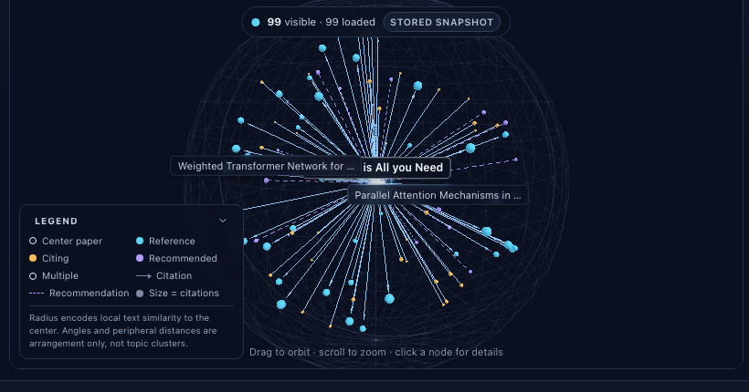
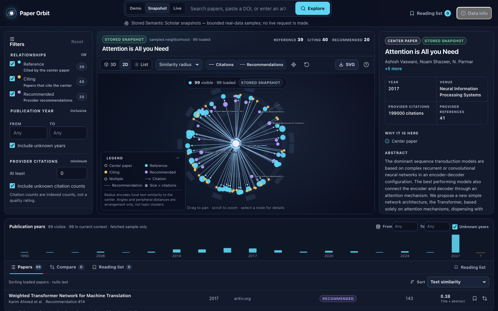

Paper Orbit: exploring the research around a paper
Dataset and source. Paper Orbit uses the public Semantic Scholar Academic Graph API and Recommendations API (api.semanticscholar.org), retrieved on October 28, 2026. The data is a research-based, publicly available citation index, not personal or organizational data. It is governed by the Semantic Scholar API license.
What the data represents. Each record represents a paper: a canonical paper ID, title, year, authors, venue, citation and reference counts, external identifiers, and an abstract when available. The app also stores observed relationships: reference edges from a paper to earlier work it cites, citing edges from later papers to it, and recommendation associations. The main query starts from a seed paper and retrieves its center metadata, references, citing papers, and recommendations; the app is not limited to a fixed set of papers. A neighborhood is a bounded result of that query: up to 40 references, 40 citing papers, and 20 recommendations (at most 101 nodes). Three example query results (249 catalog records) are bundled as offline demo snapshots.
Why it is interesting and important. A reader starting from one paper has to understand its foundations, its later reception, and nearby work worth reading. A flat search list does not expose those relationships or their direction. This dataset supports those questions while making the limits visible: citation counts are indexed counts, not quality; coverage is incomplete; many abstracts are missing; and recommendations are not citations. These properties create analytical choices, not one ranked answer.
Scope. Live mode runs the same query for any resolved seed paper, so the dataset is not limited to the three cached seeds in Table 1; those are offline demo snapshots. Each neighborhood is intentionally bounded, not a complete field map, but supports overview, filtering, comparison, and navigation.
| Seed paper / query center | Nodes | References | Citing | Recommended | Missing abstracts |
|---|---|---|---|---|---|
| Attention is All you Need (2017) | 100 | 39 | 40 | 20 | 83 / 99 |
| A Deep Reinforced Model for Abstractive Summarization (2017) | 98 | 40 | 40 | 20 | 86 / 97 |
| A Learning Algorithm for Continually Running Fully Recurrent Neural Networks (1989) | 60 | error | 40 | 19 | 58 / 59 |
Table 1. Example results of the main neighborhood query. Each row is a seed paper/query center; counts are unique loaded papers, not the full dataset. Node counts deduplicate papers in more than one relationship set—the “Multiple” legend category—so Deep Reinforced’s 101 set entries become 98 nodes; across seeds, 258 entries become 249 catalog records because nine papers recur. The third references branch failed and is preserved as an error, not zero.
These personas are design assumptions, not interview findings. They describe the users for whom the visualization is intended and the constraints that shape the design.
A. Literature-review starter (primary). Background: a first- or second-year graduate student in computing who knows how to read papers and follow citations, but is new to the literature around a seed paper. Motivations: build a credible shortlist and understand the paper's foundations and follow-ups. Tasks: find the seed, inspect references and citing papers, compare candidates, and save a reading list. Context: early thesis or course project work, usually at a laptop with limited time. Challenges: flat search results, missing abstracts, biased citation counts, and uncertainty about which relationship is which.
B. Citation-path researcher (secondary). Background: a researcher or advanced student studying how a publication was received. Motivations: trace a path through citing work and understand how later papers relate to the original. Tasks: filter citing papers by year, inspect edge direction, recenter on a citing paper, and return through history. Context: at a desk while drafting a related-work section or preparing a talk, often in recurring sessions over several days. Challenges: citations may be critical or incidental; context is lost when a tool replaces the current view; provenance is often hidden.
C. Interdisciplinary researcher (tertiary). Background: a researcher entering a new area from another discipline, with strong domain knowledge but unfamiliar venues and citation norms. Motivations: orient quickly, avoid missing foundational work, and connect the new area to their home discipline. Tasks: trace the area's foundations, judge unfamiliar venues and authors, find papers that bridge to their home discipline, and save readings. Context: at a desk during the first weeks of a new project, often in repeated sessions while building a reading list. Challenges: unfamiliar terminology, venues, and author networks; sparse abstracts; and difficulty telling foundational work from field-specific noise.
The tasks below are stated in the language of literature review and citation analysis. Each is connected to the persona's goal and to a specific information need, rather than to an interface feature.
| User | Domain task | Goal / information need |
|---|---|---|
| A1 · Literature-review starter | Find a known paper by title, DOI, or arXiv ID, and understand the work it builds on. | Start from the exact seed paper and identify its foundations. |
| A2 | See which later papers build on or respond to the seed, especially from a particular period. | Understand the paper's reception over time and choose relevant follow-ups. |
| A3 | Decide which candidate to read next and keep a shortlist for later. | Leave with a defensible reading plan instead of an unranked list. |
| B1 · Citation-path researcher | See when later work took up the paper and which periods matter most. | Understand the paper's uptake over time, not just its total citation count. |
| B2 | Tell whether a paper actually cites the seed or is only suggested, and know what the results leave out. | Avoid mistaking a recommendation for a citation, and know which parts of the record are incomplete. |
| B3 | Follow a line of follow-up work, compare it with an earlier foundation, and return to the original paper. | Trace a citation path without losing the starting point or surrounding context. |
| C1 · Interdisciplinary researcher | Trace the foundational papers of an unfamiliar area, one step at a time. | Build a quick map of the area's foundations despite unfamiliar terminology. |
| C2 | Judge which unfamiliar venues and authors are credible, and separate foundational work from field-specific noise. | Decide what is worth reading without relying on prior knowledge of the field. |
| C3 | Find papers that bridge the new area to their home discipline, and save them. | Connect the new literature to existing expertise and leave with an actionable reading list. |
Table 2. Domain tasks per persona, each tied to a goal and information need.
Dataset type and attributes. The data form a network: an ego-network around one center paper, with papers as nodes carrying attributes and two edge types—directed citation links and undirected recommendation associations. A neighborhood has at most 101 nodes and 80 citation links, plus up to 20 recommendation associations (stored: 79/80/40 citation links; 20/20/19 recommendations). Title is text; venue and authors are categorical (venue is high-cardinality; authors are multi-valued); year is ordered temporal; citation and reference counts are quantitative and heavily skewed; abstract is optional text and often missing; membership is a categorical set that can overlap.
Relationships and structure. Citation links preserve direction (center → reference; citing paper → center); recommendation associations have no citation direction. Memberships can overlap, year is shared, and coverage/missingness are status attributes.
Analytical operations. Readers look up a paper, inspect its neighbors, compare candidates, and follow relationships; navigation changes the center while retaining context. Filtering, ranking, and sorting are interaction idioms, not tasks in themselves. Assessing provenance is also an operation: loaded totals must be distinguishable from provider totals, and a failed branch from an empty one.
| Domain task | Abstract task → target | Visual or interface support | Table 2 tasks |
|---|---|---|---|
| What does this paper build on? | Browse → topology (neighbors along outgoing citation links) | Reference links, directed arrows, list | A1, C1 |
| Who cites it, and when? | Summarize → distribution (year); Locate → items within a time range | Citing links, year histogram, time range, list | A2, B1 |
| What should I read next? | Explore/Identify → items with high similarity or citation counts | Candidates, local similarity, citation counts, venue/authors | A3, C3 |
| How do candidates differ? | Compare → attributes | Side-by-side metadata, venue, authors, abstract availability | A3, B3, C2 |
| What happens if I follow this paper? | Browse → topology (paths); navigation retains context | Recenter action, history back/forward, URL state | B3 |
| Can I trust this sample? | Summarize/Identify → attributes (missingness, coverage status) | Mode labels, Data info, branch status, missing-value counts | B2, C2 |
| Save a reading list | Produce → record | Reading list and export | A3, C3 |
Table 3. Domain-to-abstract mapping. Each row pairs a domain question with an action and target, its interface support, and the Table 2 tasks covered.
Encoding contract. Color encodes membership; size encodes provider citation count (not quality); solid arrows are citations; dashed lines are recommendations; radius is local TF-IDF similarity when text exists. Angular position and peripheral distance are layout, not meaning: they do not encode topic, quality, influence, or rank. The 3D view gives an overview; the SVG 2D view and HTML list provide exact labels and keyboard access.
Limitations. The sample is bounded, not a complete citation graph. Citation counts favor older indexed work. Most stored neighbors lack abstracts, so similarity is often title-only or unavailable. Recommendations are candidates, not measured semantic neighbors. No user study has been conducted; personas are assumptions. The tool does not ingest full text, generate summaries, or use embeddings.

The sample contains 100 nodes: 99 neighbors and the center. Reference nodes are cyan, citing nodes amber, and recommendations violet; size represents provider citation count. The legend also states that radius encodes local text similarity and that angle and peripheral distance are arrangement only. This is one example cached query result, stored offline as a bounded sample; it is not a complete citation graph. The three stored centers contain 100, 98, and 60 loaded nodes; the LSTM sample preserves a failed references branch as an error.
The abstraction separates items, attributes, directed links, recommendation associations, sets, and derived attributes. This separation is what lets the interface distinguish “cited by,” “references,” and “recommended” without blending them into a generic related-work list.

1 2 3 4 5This is an actual stored-snapshot 2D view, not a mockup. The numbered regions show how the abstract operations are exposed: filter membership, inspect directed adjacency, read exact attributes, filter by time, and scan exact metadata. The same state is available in the 3D and list views.
Branch status: Attention references 39 / citing 40 / recommended 20 (all ok); Deep Reinforced 40 / 40 / 20 (all ok); LSTM references error / citing 40 / recommended 19. The failed branch is preserved as an error, not shown as zero references.
The high missing-abstract rate limits text similarity and is displayed rather than imputed. Counts come from the three normalized snapshot files; they describe the loaded sample, not the provider's complete citation graph.